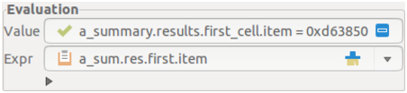

Figure 8: The Evaluation part: an expression list entered in the Expr field and its value in the Value field. Observe that the abbreviated query names entered into the Expr field have been correctly expanded in the Value field.
The Evaluation part consists of two text fields: Expr and Value. Field Expr may be filled
The term “near the insertion cursor” needs an explanation. If there are bullets (denoting not yet written function arguments that may come from a data window) right to the insertion cursor then the first one is replaced by the selected query, if there is no bullet to the right then the query is appended to the existing string. Then the cursor moves rightward to the next bullet, if any, or to the string end. This way the natural left-to-right writing of expressions is supported and cursor positioning on bullets to be replaced is rather automatic. Unfortunately, the insertion cursor is not visible if the text field has not the input focus, particularly when the mouse pointer is used to select an expression from another part. To make the target position of a clicked query detectable, the bullet right to the insertion cursor is larger than the others.
The expression is computed when Enter is pressed (except for the triple click just mentioned). The value is shown in the non-editable field Value. Precisely, the part of the expression list is shown where the insertion cursor of the Expr field resides (the expression nearest to the left of the cursor up to its leftmost target). This way, values of even very long expression lists can be shown in the one line field. Not shown are expression ranges and their details since a specific index value is not determined, but the rule applies to the other expression details.
Clicking the left icon in the Expr field copies the values of the items of the expression list to the tree of the Data part thereby expanding expression ranges and and their details. There the expressions will indicated by an X. If an expression has a detail then this is shown (instead of the usual object attributes) when the expression’s row in the Data part will be expanded by GUI manipulation.
Clicking the left icon in the Value field (if sensitive) assigns the shown value to the selected tree item of the Data part. The icon is sensitive only if the item is assignable from the value. In case of numeric basic expanded types: any INTEGER_* and NATURAL_* values can be assigned to INTEGER_*, NATURAL_*, or REAL_* items, any REAL_* values can be assigned to REAL_* items; the conversion is done along the lines of the C type casting. In all other cases the item is assignable if its type set contains the type of the expression in the Value field (see Sec. 3.9.2 for displaying the typeset of an entity).